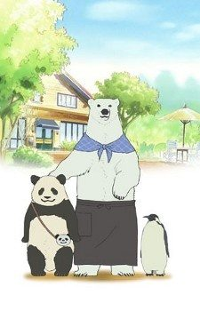
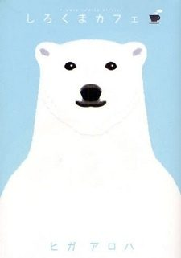

Anime
MangaPolar Bear's Café
しろくまカフェ
The anime takes the story to Unclear.
7.3AniList
—Animeter
50 epEpisodes
Anime finished. Where does the manga pick up?
StatusNo source yet
We looked for where the anime ends in the manga but found no source we trust yet. The manga is 105 chapters, finished.